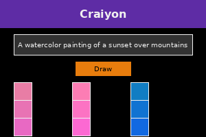
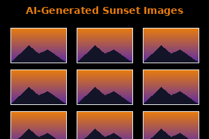

0% Complete
Day 2: AI for Art with Craiyon.com
Introduction to AI Art Generation
Welcome to Day 2 of "AI Made Simple"! Today, you'll discover how to create unique artwork using AI with Craiyon.com, a free and accessible AI image generator that turns your text descriptions into visual art.

Craiyon.com allows you to:
- Generate images from text descriptions (called "prompts")
- Create artwork in various styles without any artistic skills
- Experiment with different descriptions to refine results
- Download and share your AI-generated creations
Beginner Activity: Create Your First AI Artwork
Let's create some simple AI art with Craiyon:
- Visit Craiyon.com (no account needed)
- In the text box, type a simple prompt like: "A watercolor painting of a sunset over mountains"
- Click "Draw" and wait for the AI to generate your images (this may take 1-2 minutes)
- Examine the different interpretations of your prompt

Tips for better results:
- Be specific about the style you want (e.g., watercolor, oil painting, digital art)
- Include details about colors, lighting, and composition
- Mention artists or art styles for particular aesthetics (e.g., "in the style of Van Gogh")
Bonus Task: Create a Personalized AI Greeting Card
Let's apply your new AI art skills to create something practical:
- Think of an occasion (birthday, anniversary, thank you)
- Create a prompt for a greeting card image, like: "A cheerful birthday cake with colorful balloons, digital art style"
- Generate the image with Craiyon
- Download your favorite result
- Optional: Add text using a simple image editor or print it and write your message by hand
This exercise shows how AI art can be practical for everyday use, even without design skills.
Reflection Question
Take a moment to consider this question:
"How might AI-generated art change how we think about creativity and artistic skills? Is the person writing the prompt the artist, or is the AI the artist?"
This reflection helps you consider the broader implications of AI in creative fields.